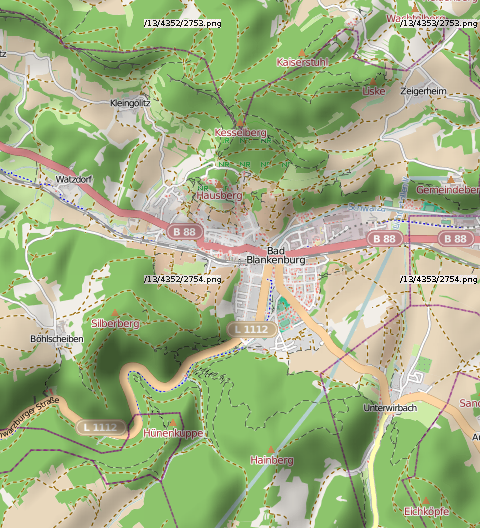

Tile-Server für Openstreetmap

Hier ein kleiner Überblick darüber, welche Ressourcen mir bei meinen Übungen zum Thema Geo-Informatik und Openstreetmap geholfen haben. Zum Testen der Implementierungen rund um dieses Themengebiet - unter anderem EBMap4D benötigte ich eine eigene Quelle für das Kartenmaterial.
Die Notwendigkeit für einen eigenen Server ergab sich unter anderem daraus, daß meine Tests es nötig machten, immer wieder die einzelnen Kacheln der Kartendarstellung neu zu laden. Es existieren zwar Enthusiasten, die eigene Tile-Server betreiben und diese im Internet zur Verfügung stellen, jedoch gilt es als höflich, solche nicht durch ständige hohe Last in die Knie zu zwingen.
Ich entwickelte unter anderem eine Komponente zur Verwendung in Java-Anwendungen, die einen Cache für solche Tiles einrichtet und verwaltet. Aber speziell in der Zeit ihrer Entwicklung - als der Cache also noch nicht zufriedenstellend funktionierte - hatte ich immer ein schlechtes Gewissen. Und so entstand damals die Idee, einen eigenen Tile-Server in meinem "Labor" zu betreiben, mit dem ich dann unabhängiger wäre.
Ein weiterer Grund dafür war, daß man dadurch in der Lage wäre, eigene Tiles für ganz unterschiedliche Anwendungszwecke zu erstellen: in einem eigenen Server ist es möglich, die Stylesheets nach Lust und Laune zu variieren. Das war auch eine der Ideen in unserer früheren Firma: mit problembezogenen Karten Umsatz zu generieren - Die Kunden kommen und schildern ihr Problem und wir entwickeln ein Stylesheet, das die Kartendaten so aufbereitet, daß Informationen, die zu diesem Problem in Beziehung stehen, besonders prominent dargestellt werden. Dazu ist es leider nie gekommen, aber jetzt ist eine weitere Idee dazugekommen, die eine Variante davon darstellt.
Die Idee, die ich durch einen eigenen Kartenserver umgesetzt habe ist, die normalen Karten durch Visualisierung der topografischen Strukturen aufzuwerten. Man findet im Internet unter dem Stichwort Hillshading durchaus einige Howtos, die erklären, wie man diese Anforderung umsetzen kann. Allerdings sind solche Howtos meist sehr problembezogen - Beispiel: Karten für Fahrradfahrer oder Wanderer. Die wollen natürlich immer wissen, wo es Täler und steile Anstiege gibt. Daher wird in den meisten der Howtos erklärt, wie man diese Informationen in die Tiles hineinbringt. Damit sind die Reliefinformationen untrennbar mit den anderen Kartendaten verbunden. Ich wollte dagegen diese Reliefinformationen als Layer in der Karte haben, die ich nach Belieben an- und abschalten kann.
Daher setzte ich einen weiteren TileServer auf, der nur die Reliefinformationen in den Tiles auslieferte. Dabei ist die Neigung des Geländes jeweils in der Helligkeit codiert: Weiß und Schwarz bedeutet maximale Neigung, grau hingegen flaches Land. Durch geschickte Nachbearbeitung (Übertragung der Helligkeit in den Kanal für die Deckkraft und gleichmäßige Schwarzfärbung der Kachel) lassen sich diese Tiles als Overlay über beliebige Karten-Tiles benutzen:

Reliefinformationen als Überlagerung einer normalen OpenStreetMap-KarteDie Server selbst setzte ich als virtuelle Linux-Container unter Ubuntu 13.04 als Wirt auf. in den Containern kanm Ubuntu 12.04 LTS als Betriebssystem zum Einsatz.
Ressourcen
LXC
- Tips on LXC in Ubuntu natty
- Using lxc LinuX Containers on Debian 'Squeeze'
- [SOLVED] LC_ALL = (unset). Googled solutions don't work.
- LXC in Ubuntu 12.04 LTS
- Install LXC (Linux Containers) under Ubuntu / Debian
- Are LXC containers enough?
Tile-Server
Hillshading
Artikel, die hierher verlinken
Tile-Server für Openstreetmap in LXC II
10.07.2018
Ich beschrieb vor einiger Zeit den Antrieb dafür, einen eigenen Tile-Server zu betreiben. Damals war als System Ubuntu 12.04 in LXC-Containern auf einem Ubuntu 13.04-Wirt zum Einsatz gekommen. Ich habe das System renoviert und auf Ubuntu 16.04 (Container und Wirt) angehoben
Tags
Android Basteln C und C++ Chaos Datenbanken Docker dWb+ ESP Wifi Garten Geo Git(lab|hub) Go GUI Hardware Java Jupyter Komponenten Links Linux Markup Music Numerik PKI-X.509-CA Python QBrowser Rants Raspi Revisited Security Software-Test sQLshell TeleGrafana Verschiedenes Video Virtualisierung Windows Upcoming...


Neueste Artikel
-
 GPU-Programmierung in Java revisited
GPU-Programmierung in Java revisited
Ich habe vor einiger Zeit darüber berichtet, wie man die GPU einer Graphikkarte auch zur Unterstützung und sogar Beschleunigung komplexer Berechnungen aus Java-Anwendungen heraus benutzen kann. Es ist sogar möglich, für einfache Berechnungen Graphikkarten, die das von Haus aus nicht beherrschen, dazu zu bringen, mit doppelter Genauigkeit zu rechnen.
Weiterlesen... -
TSV und Gnuplot-Script Export durch Plugins
Es ist nun bereits über ein Jahr her, dass neue Plugins für die sQLshell vorgestellt wurden - daher ist es nun wieder einmal an der Zeit...
Weiterlesen... -
Mosquitto MQTT Broker on Docker@Raspi
Nachdem ich in letzter Zeit wieder verstärkt neue Dienste in meinen Docker-Zoo integriert habe, habe ich nach Fertigstellung der ersten Version meiner Interpretation des BlinkStick einen weiteren Dienst "containerisiert"
Weiterlesen...
Manche nennen es Blog, manche Web-Seite - ich schreibe hier hin und wieder über meine Erlebnisse, Rückschläge und Erleuchtungen bei meinen Hobbies.
Wer daran teilhaben und eventuell sogar davon profitieren möchte, muß damit leben, daß ich hin und wieder kleine Ausflüge in Bereiche mache, die nichts mit IT, Administration oder Softwareentwicklung zu tun haben.
Ich wünsche allen Lesern viel Spaß und hin und wieder einen kleinen AHA!-Effekt...
PS: Meine öffentlichen GitHub-Repositories findet man hier.